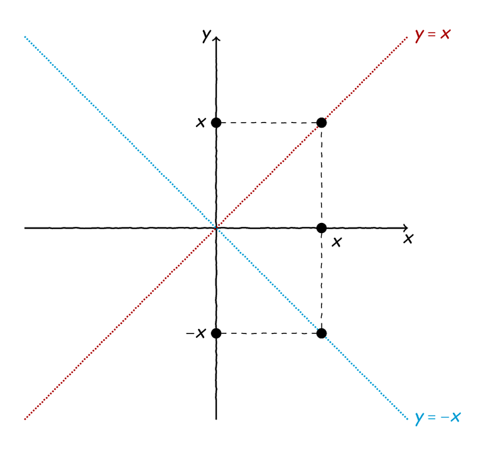
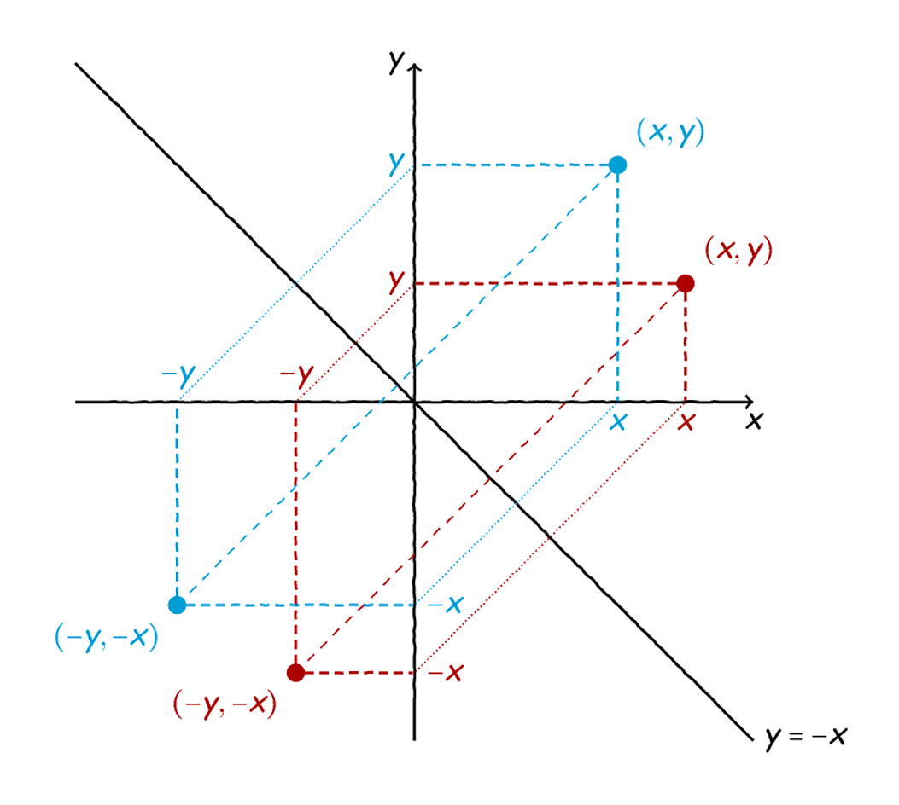
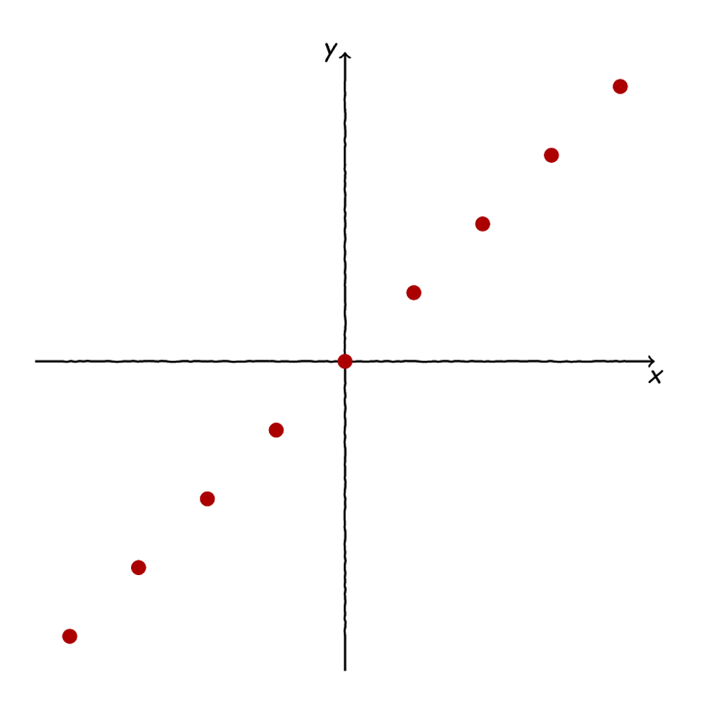
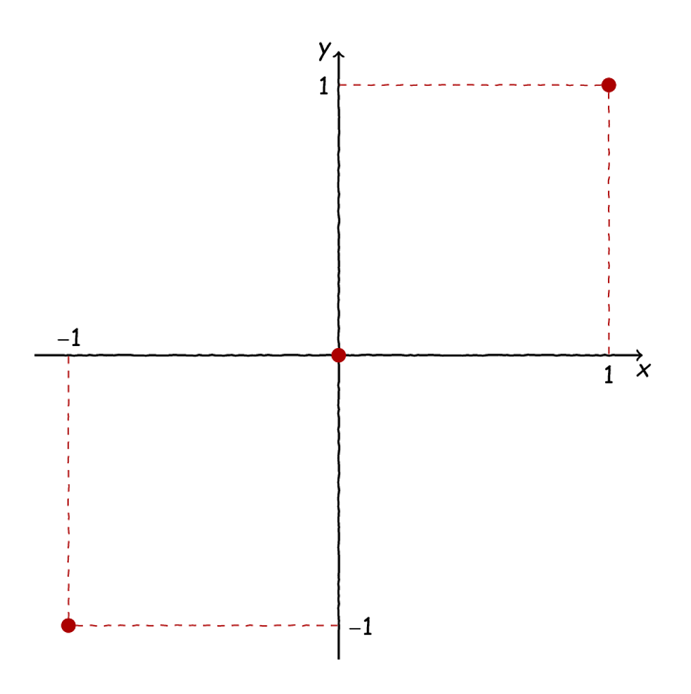
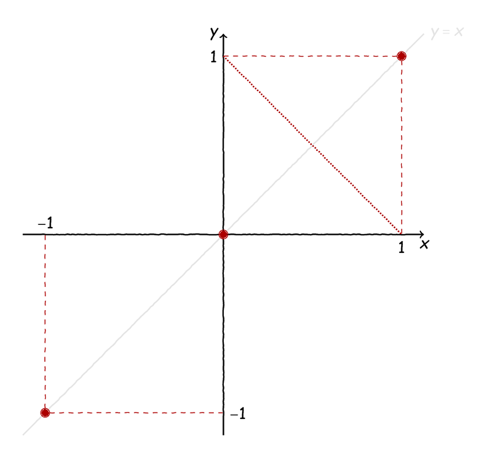
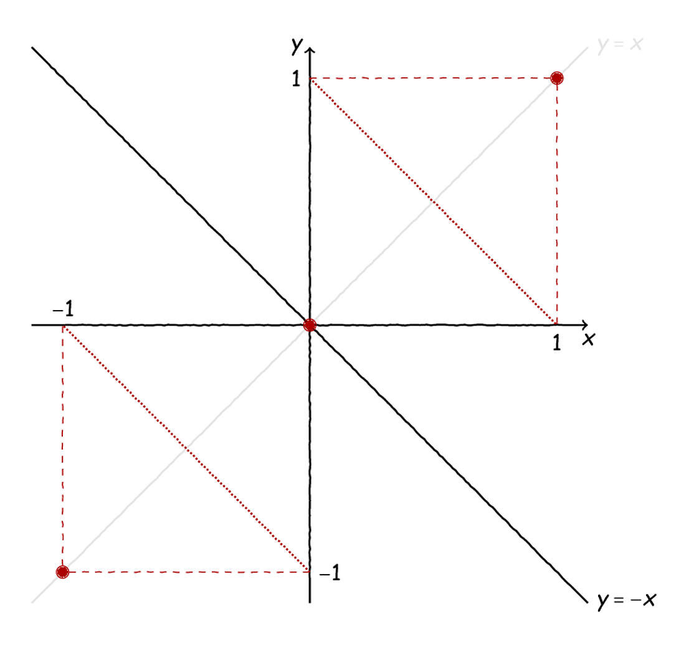
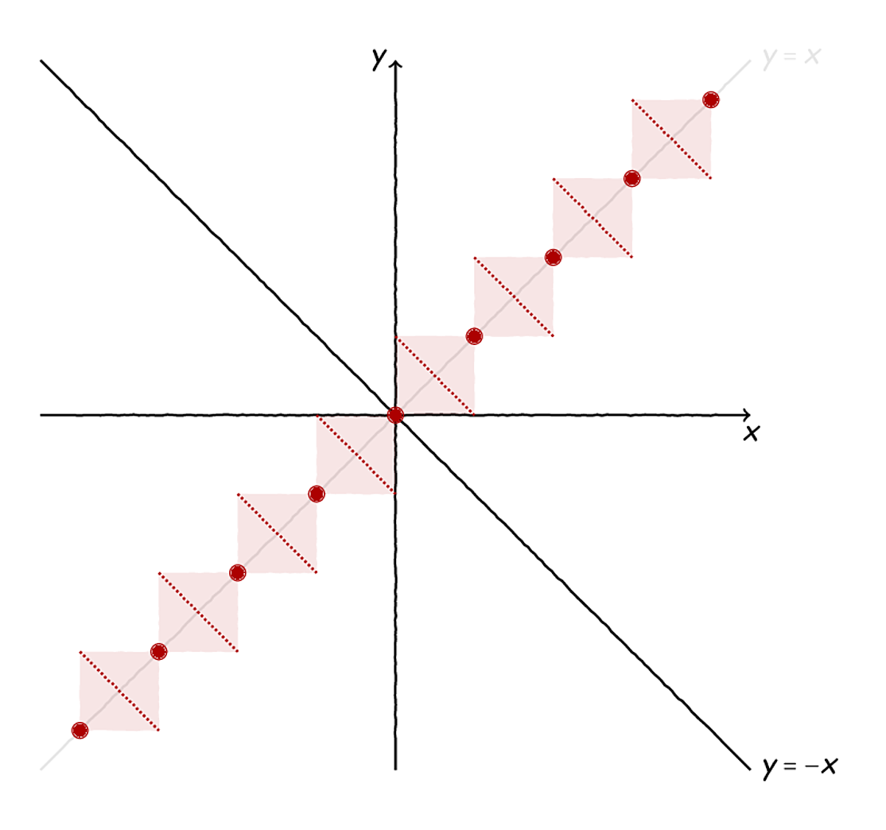
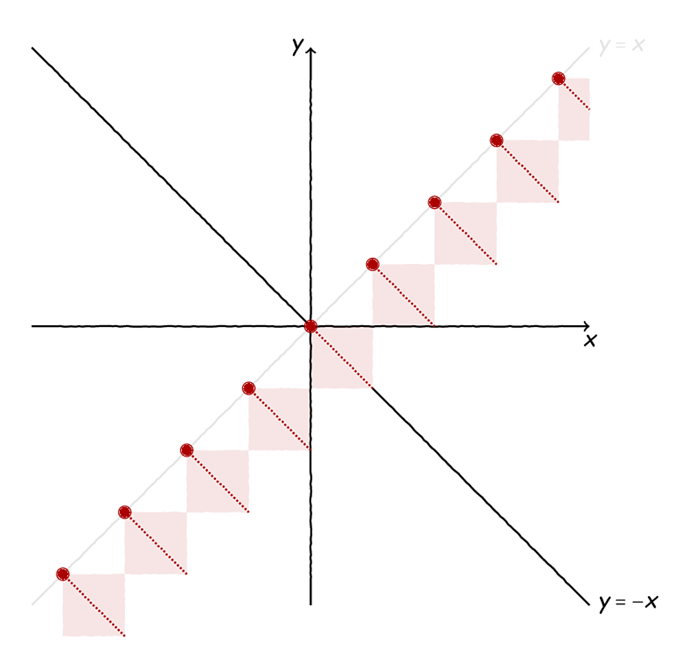

Τα Ολυμπιακά: Υδροθερμικές Συναρτήσεις;#
Ο πίνακας Η αρπαγή του Σαμψών από τους Φιλισταίους του Guercino.#
Καλοκαιράκι, Ολυμπιακοί Αγώνες, όλα τα μάτια καρφωμένα στους δέκτες μας για λίγο ευ αγωνίζεσθαι, λίγο αθλητισμό και λίγο θέαμα. Λίγο απʹ όλα, που λέμε. Ωστόσο, λίγο νωρίτερα μέσα στο ίδιο καλοκαιράκι είχαμε άλλη μία Ολυμπιάδα, στο Μπαθ (αυτό το Bath, που λέμε) του Ηνωμένου Βασιλείου (μην το μπερδέψετε με το «μπαθ» του σπιτιού ή της γειτονιάς). Την 65 Διεθνή Μαθηματική Ολυμπιάδα, που, όπως κάθε χρόνο, μαθητές από όλο τον κόσμο διαγωνίζονται σε ενδιαφέροντα προβλήματα από τον κόσμο των μαθηματικών.
Ανάμεσα στα διάφορα προβλήματα που είδαμε φέτος, ένα κομψό και κάπως ζόρικο θέμα είναι και το 6ο θέμα (το τελευταίο, τρίτο θέμα της δεύτερης ημέρας) του διαγωνισμού. Ας δούμε την εκφώνησή του:
Έστω \(\mathbb{Q}\) το σύνολο των ρητών αριθμών. Μία συνάρτηση \(f : \mathbb{Q} \to \mathbb{Q}\) λέγεται υδροθερμική, αν ικανοποιείται η ακόλουθη ιδιότητα: για κάθε \(x, y \in\mathbb{Q}\) ισχύει τουλάχιστον μία από τις ισότητες:
\[f(x+f(y))=f(x)+y ή .. math:: f(f(x)+y)=x+f(y).\]Να αποδείξετε ότι υπάρχει ακέραιος \(c\) τέτοιος, ώστε για κάθε υδροθερμική συνάρτηση \(f\) να υπάρχουν το πολύ \(c\) διαφορετικοί ρητοί αριθμοί που γράφονται στη μορφή \(f(r)+f(-r)\) για κάποιο ρητό αριθμό \(r\) , και να προσδιορίσετε την ελάχιστη δυνατή τιμή του \(c\) .
Ωραίο, ε; Υδροθερμική συνάρτηση, πού τους ήρθε το όνομα, θα πείτε; Αλλά, ας μην ασχοληθούμε τώρα με την ονοματολογία, ας δούμε αν μπορούμε, αρχικά, να βγάλουμε άκρη με την ίδια την άσκηση.
Όλα τα θέματα του διαγωνισμού, καθώς και διάφορα στατιστικά μπορείτε να βρείτεεδώ.
Λίγες Σκόρπιες Σκέψεις#
Λοιπόν, το επίκεντρο της προσοχής σε αυτό το θέμα, όπως θα φαντάζεστε, είναι η συναρτησιακή σχέση που μας δίνει, η οποία, ωστόσο, δεν είναι και πολύ βολική, καθώς έχει αυτό το «ή». Αλλά, τι να κάνουμε, θα δουλέψουμε με αυτό για αρχή και, αν μας σπάσει αρκετά τα νεύρα, θα δούμε τι εναλλακτικές έχουμε.
Ωραία, πώς ξεκινάμε να δουλεύουμε;
[Σκέψη]
Αρχικά, ας δοκιμάσουμε να δούμε μήπως κάποια γνωστή μας συνάρτηση ικανοποιεί την παραπάνω σχέση, για να πάρουμε μια ιδέα για το πώς μπορεί να μοιάζει μία τέτοια, υδροθερμική, συνάρτηση. Πρώτη μας δοκιμή θα είναι κάτι απελπιστικά απλό, η \(f(x)=0\) . Σε αυτή την περίπτωση, η δοσμένη σχέση στην πρώτη περίπτωση γίνεται:
το οποίο, σαφώς, δε γίνεται να ισχύει για κάθε \(y\in\mathbb{Q}\) . Αντίστοιχα, το δεύτερο σκέλος της δίνει:
το οποίο και πάλι δε γίνεται να ισχύει για κάθε \(x\in\mathbb{Q}\) . Με λίγα λόγια, η μηδενική συνάρτηση σίγουρα δεν είναι υδροθερμική. Αντίστοιχα, δεν μπορεί καμία σταθερή συνάρτηση να ικανοποιεί την παραπάνω σχέση, επομένως, ας πάμε σε μία λίγο πιο «ζωντανή» συνάρτηση, την \(f(x)=x\) . Σε αυτή την περίπτωση, από την πρώτη περίπτωση έχουμε:
που είναι κάτι που ισχύει. Τυπικά, δε χρειάζεται να κοιτάξουμε και το δεύτερο σκέλος του «ή», καθώς αποδείξαμε ότι σε κάθε περίπτωση το πρώτο ισχύει για κάθε \(x,y\in\mathbb{Q}\) . Αλλά, για λόγους πληρότητας, ορίστε και τι συμβαίνει στο δεύτερο σκέλος:
που, και πάλι, ισχύει. Ωραία, τρώγοντας έρχεται η όρεξη, οπότε γιατί να μη δοκιμάσουμε, γενικά, συναρτήσεις της μορφής \(f(x)=ax\) ; Ας τις δοκιμάσουμε! Στην πρώτη περίπτωση έχουμε:
Για να είναι ίσα τα δύο μέλη στο τέλος πρέπει, προφανώς, να έχουν τους ίδιους συντελεστές, δηλαδή:
Και με το δεύτερο μέλος αν παίξετε, θα πάρετε κάτι ανάλογο, συνεπώς, οι μόνες συναρτήσεις της μορφής \(f(x)=ax\) που είναι υδροθερμικές είναι οι \(f_1(x)=x\) και \(f_2(x)=-x\) . Για να μην ξεχνιόμαστε, οι γραφικές τους παραστάσεις είναι αυτές που φαίνονται παρακάτω:

Οι γραφικές παραστάσεις δύο υδροθερμικών συναρτήσεων. Οι γραφικές παραστάσεις είναι «κουκκιδωτές» για να μην ξεχνάμε ότι το πεδίο ορισμού τους δεν είναι οι πραγματικοί αριθμοί αλλά μόνο οι ρητοί.#
Ωραία, εντάξει, δεν είναι, θα πει κανείς, ιδιαίτερα περίπλοκες, από τη μία, αλλά είναι δύο συναρτήσεις που μπορεί να μας βοηθήσουν λίγο να κατευθύνουμε τη σκέψη μας. Για παράδειγμα, γνωρίζοντας ότι αυτές οι δύο συναρτήσεις αποτελούν παραδείγματα υδροθερμικών συναρτήσεων, αντιλαμβανόμαστε αμέσως ότι μάλλον η δοσμένη σχέση δε μας λέει κάτι για το είδος της μονοτονίας μίας υδροθερμικής συνάρτησης, καθώς η μεν \(f_1\) είναι γνησίως αύξουσα, η δε \(f_2\) είναι γνησίως φθίνουσα. Επομένως, δε θα είναι το πρώτο πράγμα που θα μας απασχολήσει η μονοτονία μίας υδροθερμικής συνάρτησης. Γενικότερα, αν μία ιδιότητα δεν τη μοιράζονται τόσο η \(f_1\) όσο και η \(f_2\) δε θα έχει νόημα να την αναζητήσουμε σε όλες τις υδροθερμικές συναρτήσεις, καθώς δεν γίνεται να προκύψει με κάποιο τρόπο από τα δεδομένα μας. Με ανάλογο σκεπτικό, ιδιότητες που μοιράζονται οι δύο αυτές συναρτήσεις θα είχε ίσως νόημα να εξετάσουμε αν ικανοποιούνται από κάθε υδροθερμική συνάρτηση. Αυτό, σε αντίθεση με το προηγούμενο, δεν είναι ένα καθαρό και απόλυτο επιχείρημα, υπό την έννοια ότι μπορεί, π.χ., να έτυχε τόσο η \(f_1\) όσο και η \(f_2\) να περνούν από την αρχή των αξόνων, αλλά, σε κάθε περίπτωση, από κάπου πρέπει κι εμείς να αντλήσουμε έμπνευση, σωστά;
Και, αφού το έφερε η κουβέντα, τι μπορούμε να πούμε για το \(f(0)\) για μία υδροθερμική συνάρτηση; Αν πάρουμε \(x=y=0\) τότε έχουμε, στην πρώτη περίπτωση:
Αντίστοιχα, στη δεύτερη περίπτωση έχουμε:
Σε κάθε περίπτωση, λοιπόν, για μία υδροθερμική συνάρτηση ισχύει ότι:
ή, με άλλα λόγια, το \(f(0)\) είναι ένα σταθερό σημείο της \(f\) . Αν δεν το θυμάστε, σταθερό σημείο μίας συνάρτησης \(f\) χαρακτηρίζουμε κάθε σημείο τομής της γραφικής της παράσταση με τη διχοτόμο \(y=x\) δηλαδή τα \(x\in D_f\) για τα οποία ισχύει ότι \(f(x)=x\) . Ο όρος σταθερό σημείο είναι, μάλιστα, αρκετά περιγραφικός, αφού, πρακτικά, η \(f\) αφήνει αναλλοίωτο ένα σταθερό της σημείο καθώς δεν «δρα» πάνω του.
Ωραία, επομένως, δε βρήκαμε ότι \(f(0)=0\) όπως ίσως μας «ωθούσαν» οι \(f_1,f_2\) να πιστέψουμε, ωστόσο βρήκαμε κάτι εξίσου καλό: όποιο κι αν είναι το \(f(0)\) γνωρίζουμε ότι είναι ένας αριθμός τον οποίο κάθε υδροθερμική συνάρτηση \(f\) δεν επηρεάζει.
Αλλά, για ποιον σκοπό τα λέμε όλα αυτά;
Κοιτάζοντας τον Στόχο#
Τόση ώρα κάναμε κάποιες σκόρπιες σκέψεις, με κύριο στόχο να ζεσταθούμε λίγο και να εξοικειωθούμε με τη δομή της δοσμένης υπόθεσης που είναι λίγο… «κάπως». Αλλά, πρακτικά, τίποτα από όλα όσα έχουμε βρει ως τώρα δεν ξέρουμε αν είναι χρήσιμο στην πορεία μας προς τον στόχο. Βασικά, ποιος είναι ο στόχος, για να έχουμε καλό ερώτημα;
Ας ρίξουμε μία ματιά ξανά στην εκφώνηση:
[…] Να αποδείξετε ότι υπάρχει ακέραιος \(c\) τέτοιος, ώστε για κάθε υδροθερμική συνάρτηση \(f\) να υπάρχουν το πολύ \(c\) διαφορετικοί ρητοί αριθμοί που γράφονται στη μορφή \(f(r)+f(-r)\) για κάποιο ρητό αριθμό \(r\) , και να προσδιορίσετε την ελάχιστη δυνατή τιμή του \(c\) .
Πωπωπω! Καλά, εδώ μιλάμε για πολλούς ποσοδείκτες. Αρχικά, το βασικό ζητούμενο είναι να δείξουμε ότι υπάρχει ένας ακέραιος, αυτός που ονομάζει \(c\) η εκφώνηση. Τώρα, στη συνέχεια, αυτός ο ακέραιος πρέπει να έχει κάποιες ιδιότητες. Για την ακρίβεια, πρέπει, αν διαλέξουμε μία \(f\) που να είναι υδροθερμική, να μην υπάρχουν περισσότεροι από \(c\) ρητοί που να γράφονται στη μορφή \(f(r)+f(-r)\) . Αυτό, πρακτικά, σημαίνει ότι αν πάρουμε τη συνάρτηση \(g:\mathbb{Q}\to\mathbb{Q}\) που ορίζεται ως:
τότε αυτή θέλουμε να παίρνει το πολύ \(c\) διαφορετικές τιμές. Για παράδειγμα, αν το σύνολο τιμών της \(g\) για μία δεδομένη \(f\) είναι το:
τότε αυτό που γνωρίζουμε είναι ότι για κάθε ρητό \(r\in\mathbb{Q}\) η παράσταση \(f(r)+f(-r)\) μπορεί να πάρει μία από αυτές τις πέντε τιμές και καμία άλλη. Και, μάλιστα, κάτι τέτοιο θέλουμε να δείξουμε ανεξάρτητα από το ποια είναι η \(f\) . Δηλαδή, για μία οποιαδήποτε υδροθερμική συνάρτηση \(f\) , η αντίστοιχη \(g\) δεν μπορεί παρά να παίρνει το πολύ πέντε (ας πούμε, αν \(c=5\) ) διαφορετικές τιμές.
Παράξενο, έτσι; Δηλαδή, τι απαίτηση είναι αυτή και πόσο ισχυρή είναι, πια, αυτή η «υδροθερμικότητα» για μία συνάρτηση; Αν θέλουμε να το εκφράσουμε με όρους \(f\) , αυτό που μας ζητείται, πρέπει, πρακτικά, για κάθε \(r\in\mathbb{Q}\) να ισχύει ότι:
Δεδομένου ότι το \(g(r)\) μπορεί να πάρει μόνο πεπερασμένες στο πλήθος τιμές, αυτό που μας λέει η παραπάνω σχέση είναι ότι, για οποιοδήποτε ρητό αριθμό \(r\) πρέπει το \(f(-r)\) να διαφέρει από το \(f(r)\) κατά μία από τις πεπερασμένες στο πλήθος τιμές της \(g\) . Αυτό οι δύο υδροθερμικές συναρτήσεις που έχουμε εντοπίσει ως τώρα το ικανοποιούν απόλυτα, καθώς:
ενώ, αντίστοιχα:
Συνεπώς, εδώ έχουμε την απλούστερη περίπτωση όπου η \(f\) είναι είτε άρτια είτε περιττή, επομένως η αντίστοιχη \(g\) παίρνει μία και μόνο τιμή (μηδέν). Επομένως, ίσως έχει ενδιαφέρον να εξερευνήσουμε τι συμβαίνει με το \(f(x)\) και το \(f(-x)\) . Ας πάμε να βάλουμε \(y=-x\) στη δοσμένη σχέση. Για την πρώτη περίπτωση έχουμε:
ενώ στη δεύτερη περίπτωση έχουμε:
Ωραία… Αυτά, είναι η αλήθεια, δε φαίνονται και πολύ ενδιαφέροντα, αλλά, τι να κάνουμε. Γενικότερα, θα θέλαμε να μπορούσαμε κάπως να συμπτύξουμε αυτή την υπόθεση από τη μορφή «Α ή Β» στη μορφή «Γ», δηλαδή, να εξαφανίσουμε αυτό το καταραμένο «ή», καθώς, ως τώρα, μας κάνει, κατά κύριο λόγο, τη ζωή δύσκολη. Σε αυτό το σημείο έχουμε δύο επιλογές (τι πιο πρωτότυπο): η πρώτη είναι να αποδείξουμε κάτι της μορφής:
όπου με \(\lor\) σημειώνουμε το «ή». Δηλαδή, να αποδείξουμε ότι η δοσμένη υπόθεση είναι ισοδύναμη με μία πιο συμμαζεμένη μορφή, C, η οποία δεν περιλαμβάνει κάποιο «ή» μέσα της και μπορεί να μας κάνει τη ζωή λίγο απλούστερη. Η άλλη εναλλακτική είναι κάπως ασθενέστερη:
Δηλαδή, να αποδείξουμε μία απλή συνεπαγωγή, άρα, από την υπόθεσή μας που αποτελεί τον ορισμό της υδροθερμικής συνάρτησης να πάρουμε μία επιμέρους ιδιότητα αυτών των συναρτήσεων, τη C, η οποία, αν είναι αρκετά γενική, θα μας επιτρέψει κάπως να αποδεικνύουμε γενικά πράγματα για τις υδροθερμικές συναρτήσεις με έναν πιο άνετο τρόπο, αποφεύγοντας αυτά τα «ή».
Τώρα, τι μπορούμε να κάνουμε για να «στρώσουμε» λίγο τη δοσμένη μας σχέση;
[Σκέψη]
[Κι άλλη σκέψη]
Λοιπόν, μία ιδέα θα ήταν να πάμε να βάλουμε όπου \(y\) το \(x\) για να εξαφανίσουμε τη μία μεταβλητή και, έτσι, ελπίζουμε να φέρουμε τις δύο περιπτώσεις στην ίδια μορφή. Προφανώς, πετώντας μία μεταβλητή, είμαστε στη δεύτερη περίπτωση, όπου πάμε να αποδείξουμε ένα γενικό συμπέρασμα από τον ορισμό μας που, εν γένει, δεν είναι ισοδύναμο με τον ορισμό της «υδροθερμικότητας». Λοιπόν, στην πρώτη περίπτωση έχουμε:
Στη δεύτερη περίπτωση έχουμε:
Δηλαδή, καταλήξαμε σε ένα ενιαίο συμπέρασμα για κάθε \(x\in\mathbb{Q}\) :
Τώρα, τι μας λέει το παραπάνω; Πρακτικά, ότι κάθε αριθμός της μορφής \(x+f(x)\) αποτελεί ένα σταθερό σημείο της \(f\) . Δηλαδή, αν έχουμε, για παράδειγμα τον αριθμό \(x_0=1+f(1)\) τότε αυτός είναι ένα σταθερό σημείο της \(f\) , δηλαδή:
Μάλιστα, αυτό ισχύει για κάθε \(x\in\mathbb{Q}\) . Έτσι, η παραπάνω σχέση φαίνεται σαν να υπονοεί ότι μία υδροθερμική συνάρτηση έχει άπειρα σταθερά σημεία, δηλαδή μοιάζει, κάπως, με την \(y=x\) (που είναι μία υδροθερμική συνάρτηση). Είναι όμως έτσι;
Ακόμα δεν μπορούμε να πούμε πολλά, γιατί δεν ξέρουμε και πολλά για την \(f\) . Για παράδειγμα, γνωρίζουμε ένα σταθερό σημείο της, το \(f(0),\) αφού παραπάνω δείξαμε ότι \(f(f(0))=f(0)\) οπότε το παραπάνω μας λέει ότι και το \(0+f(0)=f(0)\) είναι ένα σταθερό σημείο το οποίο, όμως, δεν είναι κάτι καινούργιο… Επομένως, μοιάζει σαν να μας έδωσε κάτι η παραπάνω σχέση και, αμέσως αμέσως, να μας το πήρε πίσω. Τι άλλο μπορούμε να κάνουμε τώρα;
Απόπειρα #002#
Λοιπόν, ας ρίξουμε μια ματιά ξανά σε όσα έχουμε αποδείξει ως τώρα:
\(f(f(0))=f(0)\) .
Οι \(f_1(x)=x\) και \(f_2(x)=-x\) είναι υδροθερμικές.
\(f(x+f(x))=x+f(x)\) για κάθε \(x\in\mathbb{Q}\) .
Ωραία, και τι μπορούμε να συμπεράνουμε με βάση αυτά; Ας αντλήσουμε ξανά έμπνευση από τις δύο μοναδικές, προς το παρόν, υδροθερμικές συναρτήσεις που έχουμε εντοπίσει. Τι βλέπουμε να έχουν αυτές κοινό; Είναι αμφότερες γνησίως μονότονες, αλλά, όπως είπαμε, αυτό μάλλον δε μας κάνει, καθώς έχουν διαφορετικό είδος μονοτονίας. Ως γνησίως μονότονες, όμως, είναι και «1-1». Μήπως αυτό μπορούμε να το αποδείξουμε γενικά, για κάθε υδροθερμική συνάρτηση;
Ας πάρουμε \(x,y\in\mathbb{Q}\) τέτοια ώστε \(f(x)=f(y)\) . Τώρα, από την πρώτη περίπτωση της δοσμένης σχέσης γνωρίζουμε ότι:
Παραπάνω, ωστόσο, δείξαμε ότι \(f(x+f(x))=x+f(x)\) και, στην περίπτωσή μας, όπου \(f(x)=f(y)\) μπορούμε να γράψουμε το εξής:
Εξισώνοντας τα δύο παραπάνω ευρήματά μας έχουμε:
Πρέπει, βέβαια, να εξετάσουμε και τη δεύτερη περίπτωση:
Και πάλι, αφού \(f(x)=f(y)\) και \(f(x+f(x))=x+f(x)\) έχουμε:
Εξισώνοντας τα παραπάνω έχουμε:
Τέλεια, άρα, σε κάθε περίπτωση, αν \(f(x)=f(y)\) τότε \(x=y\) συνεπώς κάθε υδροθερμική συνάρτηση είναι και «1-1»!
Με αυτό στα χέρια μας, ας ρίξουμε άλλη μία ματιά σε αυτά που αποδείξαμε ως τώρα, μήπως και κάτι αλλάζει:
\(f(f(0))=f(0)\) .
Οι \(f_1(x)=x\) και \(f_2(x)=-x\) είναι υδροθερμικές.
\(f(x+f(x))=x+f(x)\) για κάθε \(x\in\mathbb{Q}\) .
Αφού η \(f\) είναι «1-1» μπορούμε χωρίς τύψεις να την εξαφανίζουμε από ισότητες, επομένως, το πρώτο μας αποτέλεσμα μπορεί να απλοποιηθεί λίγο:
Αυτό είναι πολύ ωραίο, αρχικά γιατί επιβεβαιώνει και μία αρχική μας υποψία ότι μία υδροθερμική συνάρτηση περνά από την αρχή των αξόνων - όπως κάνουν οι δύο υδροθερμικές συναρτήσεις που έχουμε εντοπίσει ως τώρα. Επομένως, μία υδροθερμική συνάρτηση είναι «1-1», περνάει από την αρχή των αξόνων, αφού \(f(0)=0\) και είναι πολύ πιθανό να έχει και πάρα πολλά σταθερά σημεία, καθώς, για να μην ξεχνιόμαστε, για κάθε \(x\in\mathbb{Q}\) :
Αυτό, όπως είπαμε, σημαίνει ότι η \(f\) έχει μάλλον πολλά σταθερά σημεία αν είναι υδροθερμική. Λέμε «μάλλον» γιατί, για παράδειγμα, η \(f_(x)=-x\) που είναι υδροθερμική έχει μονάχα ένα σταθερό σημείο, το \(x_0=0\) που το μοιράζονται όλες τους, όπως έχουμε μόλις δείξει. Ας πούμε, όμως, ότι δεν έχουμε την \(f_2\) και έχουμε μία άλλη συνάρτηση, συνεπώς σε κάποιο σημείο θα ισχύει \(f(x_0)\neq-x_0\) Αυτό, με τη σειρά του, σημαίνει ότι:
Τώρα, από τα παραπάνω, αν \(x_1=x_0+f(x_0)\) τότε:
Δηλαδή, και το \(x_1\) είναι ένα σταθερό σημείο της \(f\) . Επίσης, από την ίδια σχέση, το \(x_2=x_1+f(x_1)\) θα είναι κι αυτό ένα σταθερό σημείο της \(f\) , αφού:
Ανάλογα, το \(x_3=x_2+f(x_2)\) θα είναι κι αυτό ένα σταθερό σημείο της \(f\) κ.ο.κ.
Παρατηρήστε τώρα ότι \(x_2=x_1+f(x_1)=x_1+x_1=2x_1\) και, αντίστοιχα, ότι \(x_3=x_2+f(x_2)=x_2+x_2=2x_2\) δηλαδή \(x_3=4x_1\) . Γενικότερα, μπορούμε σχετικά εύκολα να αποδείξουμε ότι όλα τα ακόλουθα σημεία είναι σταθερά σημεία της \(f\) :
Δηλαδή, αν μία υδροθερμική συνάρτηση έχει ένα μη μηδενικό σταθερό σημείο, τότε έχει άπειρα! Κι εδώ κάπου μας ανοίγει ξανά η όρεξη… Μήπως, αν έχει ένα μη μηδενικό σταθερό σημείο, τότε είναι τα πάντα σταθερά σημεία; Δηλαδή, μήπως οι μοναδικές υδροθερμικές συναρτήσεις που υπάρχουν είναι οι \(f_1(x)=x\) (όλα σταθερά σημεία) και η \(f_2(x)=-x\) (μόνο το μηδέν ως σταθερό σημείο);
Σταθερά… Σημεία#
Είδαμε παραπάνω κάτι ωραίο να διαφαίνεται στον ορίζοντα. Μία υδροθερμική συνάρτηση που έχει ένα μη μηδενικό σταθερό σημείο έχει, αυτομάτως, άπειρα. Για την ακρίβεια, αν \(x\neq 0\) είναι ένα σταθερό σημείο της \(f\) τότε και όλα τα πολλαπλάσιά του επί κάποια δύναμη του 2 είναι σταθερά της σημεία, δηλαδή οι αριθμοί της μορφής \(2^nx\) για \(n=0,1,2,\ldots\) Μήπως όμως μπορούμε, για αρχή, να δείξουμε ότι και ο \(3x\) είναι σταθερό της σημείο; Στο κάτω κάτω της γραφής \(3x=2x+x\) , δηλαδή είναι ένα άθροισμα σταθερών της σημείων.
Έστω, λοιπόν, \(x,y\) δύο σταθερά σημεία μίας υδροθερμικής συνάρτησης \(f\) οπότε και ισχύουν τα εξής:
Τι μπορούμε να πούμε για το άθροισμά τους, \(x+y\) ; Είναι σταθερό σημείο της \(f\) ; Από την γενική μας υπόθεση και, ειδικότερα, την πρώτη της περίπτωση, έχουμε:
και, σαφώς:
οπότε σε αυτή την περίπτωση φαίνεται να είναι. Από τη δεύτερη περίπτωση έχουμε:
οπότε, ναι, σε κάθε περίπτωση, αν \(x,y\) είναι δύο σταθερά σημεία μίας υδροθερμικής συνάρτησης, τότε σταθερό της σημείο θα είναι και το άθροισμά τους. Έτσι, αν \(x\) είναι ένα σταθερό σημείο μίας υδροθερμικής συνάρτησης \(f\) τότε με μία μικρή επαγωγή μπορούμε να δείξουμε ότι κάθε πολλαπλάσιο \(nx\) με \(n=1,2,\ldots\) είναι σταθερό της σημείο. Πράγματι:
Για \(n=1\) το έχουμε υποθέσει, αφού το \(x\) είναι εξ ορισμού σταθερό σημείο της \(f\) .
Έστω ότι για κάποιο \(n=1,2,\ldots\) το \(nx\) είναι σταθερό σημείο της \(f\) , δηλαδή \(f(nx)=nx\) .
Τώρα, για το \(n+1\) έχουμε:
Άρα και το \((n+1)x\) είναι σταθερό σημείο της \(f\) και τελειώσαμε. Μάλιστα, επειδή και το μηδέν είναι πάντοτε ένα σταθερό σημείο μίας υδροθερμικής συνάρτησης, αν \(x\) είναι ένα σταθερό σημείο της \(f\) τότε το \(nx\) είναι επίσης σταθερό της σημείο για \(n=0,1,2,\ldots\)
Εύλογη ερώτηση τώρα αποτελεί τι γίνεται με τους υπόλοιπους ακέραιους, δηλαδή τα αρνητικά «πολλαπλάσια» του \(x\) . Λοιπόν, αρχικά να παρατηρήσουμε ότι αρκεί να δείξουμε ότι αν το \(x\) είναι ένα (μη μηδενικό) σταθερό σημείο τότε και το \(-x\) είναι ένα σταθερό σημείο της \(f\) . Για να το δείξουμε αυτό, θα προσπαθήσουμε, αρχικά, να θέσουμε στην αγαπημένη μας υπόθεση όπου \(y=-x\) και να δούμε τι θα γίνει. Στην πρώτη περίπτωση έχουμε:
επομένως, αφού \(f(0)=0\) έχουμε:
Άρα σε αυτή την περίπτωση έχουμε αυτό που επιθυμούμε. Στη δεύτερη περίπτωση έχουμε:
Για το αριστερό μέλος ας παρατηρήσουμε ότι:
οπότε:
Σε κάθε περίπτωση, αν \(x\) είναι ένα σταθερό σημείο της \(f\) τότε το ίδιο είναι και το \(-x\) και έτσι έχουμε αποδείξει κάτι αρκετά χρήσιμο - και, πρωτίστως, ωραίο. Αν \(x\) είναι ένα σταθερό σημείο της \(f\) τότε το \(nx\) είναι επίσης σταθερό σημείο της \(f\) για κάθε ακέραιο \(n\) .
Είμαστε σε πάρα πολύ καλό δρόμο, καθώς κάθε υδροθερμική συνάρτηση που έχει τουλάχιστον ένα μη μηδενικό σταθερό σημείο μοιάζει κάπως με την \(f_1(x)=x\) καθώς έχει άπειρα σταθερά σημεία. Ωστόσο, το επόμενο και αποφασιστικό βήμα για να αποδείξουμε ότι κάθε τέτοια υδροθερμική συνάρτηση είναι η \(f_2\) είναι, αν βέβαια αυτό ισχύει, να αποδείξουμε ότι αν \(x\) είναι ένα σταθερό σημείο της \(f\) τότε και το \(qx\) είναι σταθερό της σημείο για κάθε ρητό αριθμό \(q\) . Αλλά, πώς θα δείξουμε κάτι τέτοιο;
Αρχικά, ας προσπαθήσουμε να το δείξουμε για το \(x/2\) και βλέπουμε πώς πάει το πράγμα. Λοιπόν, τι μπορούμε να κάνουμε για να εμφανίσουμε κλάσματα στο παιχνίδι; Χμμμ… Δειλά-δειλά, ας πάμε να βάλουμε όπου \(x\) το \(\frac{x}{2}\) στην ακόλουθη σχέση:
Εδώ έχουμε ένα διακριτικό θέμα, καθώς δε φαίνεται να μπορούμε να συνεχίσουμε κάπως, είναι η αλήθεια. Ας πάμε, επομένως, στην αρχική μας σχέση και ας δοκιμάσουμε να θέσουμε \(\frac{x}{2}\) στη θέση του \(y\) και να δούμε τι θα πάρουμε, αρχικά από την πρώτη περίπτωση:
Αντίστοιχα, στη δεύτερη περίπτωση έχουμε:
Τέλεια! Καμία από τις δύο δε φαίνεται να οδηγεί προς αυτό που θέλουμε. Επομένως, ας ξεκινήσουμε λίγο από αυτό που θέλουμε μήπως και πάρουμε κάποια πιο βολική μορφή:
Χμμμ, άρα ίσως να αξίζει τον κόπο να θέσουμε \(-\frac{x}{2}\) στη θέση του \(x\) και \(\frac{x}{2}\) στη θέση του \(y\) , οπότε, στην πρώτη περίπτωση έχουμε:
Δύσπιστα περνάμε και στη δεύτερη περίπτωση:
Κι αυτή η απόπειρα άκλαυτη πήγε, είναι η αλήθεια. Λοιπόν, ίσως φταίει η στιγμή, ίσως φταίει που ασχολούμαστε με αυτό το πράγμα τόσην ώρα, που τα μαθηματικά είναι δύσκολα και που η υπόθεση έχει αυτή τη στρυφνή μορφή, ίσως φταίνε πάρα πολλά πράγματα, αλλά, μπορεί να συμβαίνει και το εξής: να μην ισχύει αυτό που πάμε να αποδείξουμε.
Και τότε, τι;
Επιστροφή στις Ρίζες#
Λοιπόν, ας συνοψίσουμε άλλη μία φορά τι έχουμε αποδείξει ως τώρα:
\(f(0)=0\) .
Οι \(f_1(x)=x\) και \(f_2(x)=-x\) είναι υδροθερμικές.
\(f(x+f(x))=x+f(x)\) για κάθε \(x\in\mathbb{Q}\) .
Η \(f\) είναι «1-1».
Αν \(x\) είναι ένα σταθερό σημείο της \(f\) τότε για κάθε \(n\in\mathbb{Z}\) ισχύει ότι και το \(nx\) είναι σταθερό σημείο της \(f\) .
Σαφώς, στα παραπάνω η \(f\) εννοείται ότι είναι μία υδροθερμική συνάρτηση. Αρχικά, τώρα που τα ξαναγράψαμε εδώ φαίνεται να έχουμε αφήσει μία μικρή εκκρεμότητα. Αποδείξαμε ότι η \(f\) είναι «1-1», οπότε, σαφώς, η \(f\) είναι αντιστρέψιμη, επομένως υπάρχει η \(f^{-1}\) και, έτσι, εύλογα, προκύπτει το ερώτημα: ποιο είναι το πεδίο ορισμού της; Ισοδύναμα, ποιο είναι το σύνολο τιμών της \(f\) ;
Λοιπόν, λοιπόν, για να βρούμε το σύνολο τιμών της \(f\) πρέπει να δούμε ποιες είναι οι τιμές που παίρνει η \(f\) . Με το «μάτι» δε φαίνεται να έχει προκύψει ως τώρα κάποιος περιορισμός. Μάλιστα, οι δύο συναρτήσεις που έχουμε ως τώρα για «υπόδειγμα» είναι και οι δύο «επί» του \(\mathbb{Q}\) , δηλαδή έχουν ως σύνολο τιμών το σύνολο όλων των ρητών αριθμών. Επομένως, ας πάμε να δοκιμάσουμε να δείξουμε ότι κάθε υδροθερμική \(f\) είναι «επί». Για αυτόν τον σκοπό θέλουμε να δείξουμε ότι η εξίσωση \(f(x)=y\) έχει λύση ως προς \(x\) για κάθε \(y\in\mathbb{Q}\) ή, με άλλα λόγια, ότι κάθε ρητός \(y\) γράφεται στη μορφή \(f(\cdots)\) , δηλαδή ως \(f\) του «κάτι».
Ας πάρουμε τη βασική μας υπόθεση και ας αρχίσουμε να παίζουμε. Αρχικά, ας αφήσουμε το \(x\) ήσυχο και ας βάλουμε όπου \(y\) το \(f(x)\) μήπως και βρούμε κάτι ενδιαφέρον. Η πρώτη περίπτωση μας δίνει:
Η δεύτερη περίπτωση μας δίνει:
Εντάξει, όχι ακριβώς αυτό που θέλαμε, αλλά, προσέξατε αυτό το \(f(x)+f(x)\) που εμφανίζεται σε διαφορετικά σημεία σε κάθε περίπτωση; Αν ήταν \(f(x)-f(x)\) τότε τα πράγματα θα ήταν πιο βολικά, σκέψη που μας ωθεί να θέσουμε \(y=-f(x)\) οπότε και να πάρουμε, στην πρώτη περίπτωση:
Τώρα, αφού \(f(0)=0\) έπεται ότι:
Στη δεύτερη περίπτωση έχουμε:
Τέλεια, συνεπώς, σε κάθε περίπτωση ισχύει:
Τώρα, αν βάλουμε \(-x\) στη θέση του \(x\) έχουμε:
Συνεπώς, κάθε \(x\in\mathbb{Q}\) γράφεται στη μορφή \(f(\cdots)\) όπως θέλαμε, άρα κάθε υδροθερμική συνάρτηση είναι πράγματι «επί». Άρα η \(f^{-1}\) ορίζεται για κάθε ρητό αριθμό, κάτι που είναι πολύ όμορφο (;) και ευχάριστο! Και, με αυτό κατά νου, ας ρίξουμε μια ματιά σε αυτό που αποδείξαμε παραπάνω:
Εδώ μπορούμε να βάλουμε στη θέση του \(x\) το \(f^{-1}(x)\) και να δούμε τι θα πάρουμε:
Ναι, όχι, εντάξει, αυτό δε φαίνεται κομψό. Ας πάμε στην προηγούμενη μορφή να δούμε:
Με λίγο ξεσκόνισμα έχουμε:
Τώρα μάλιστα! Αυτό, εντωμεταξύ, μας λέει και κάτι ενδιαφέρον για τη συμμετρία της γραφικής παράστασης της \(f\) . Αριστερά αυτό που έχουμε είναι η συμμετρική της γραφικής παράστασης της \(f\) ως προς την \(y=x\) . Δεξιά έχουμε μία συνάρτηση με γραφική παράσταση που προκύπτει από αυτή της \(f\) αν:
την ανακλάσουμε ως προς τον άξονα \(yʹy\) (για να πάρουμε την \(f(-x),\) και,
αυτό που βρούμε το ανακλάσουμε ως προς τον άξονα \(xʹx\) (για να πάρουμε την \(-f(-x)\) .
- Μα, καλά, είναι τώρα έκφραση το «θα ανακλάσουμε το Χ»; - Ουδέν σχόλιο. - «Θα ανακλαστεί ως προς…»; «Θα πάρουμε τη συμμετρική ως προς…»; Χάθηκαν τα Ελληνικά; - Ουδέν σχόλιο.
Με άλλα λόγια αν ξεκινήσουμε από τη γραφική παράσταση της \(f\) , κάνουμε δύο ανακλάσεις ως προς τους δύο άξονες και μία ως προς τη διχοτόμο \(y=x\) θα έχουμε ξανά στα χέρια μας τη γραφική παράσταση της \(f\) . Με ακόμα καλύτερα λόγια, ας θαυμάσουμε λίγο τη σχέση:
Τι μας λέει αυτή η σχέση; Θυμηθείτε ότι, πρακτικά, αν πάρουμε ένα σημείο \(A(x,y)\) επί της γραφικής παράστασης της \(f\) τότε θα ισχύει, σαφώς, \(y=f(x)\) . Τώρα, με βάση την παραπάνω σχέση, αυτό σημαίνει ότι θα ισχύει:
Δηλαδή, το σημείο \((-y,-x)\) επίσης ανήκει στη γραφική παράσταση της \(f\) . Ας κάνουμε κι ένα σχήμα για να το δούμε αυτό:

Η συμμετρία της σχέσης \(f(-f(x))=-x\) .#
Τέλεια, επομένως, μπόνους, μαζί με το «επί» μάθαμε και ότι η γραφική παράσταση της συνάρτησής μας είναι συμμετρική ως προς τη διχοτόμο \(y=-x\) ενώ, για την αντίστροφη δείξαμε ότι:
Λοιπόν, με τα νέα μας όπλα ας δούμε αν μπορούμε να συνεχίσουμε τη σκέψη μας από εκεί που την εγκαταλείψαμε. Είχαμε προσπαθήσει να αποδείξουμε ότι αν \(x\) είναι ένα σταθερό σημείο μίας υδροθερμικής \(f\) τότε κάθε ρητό πολλαπλάσιο \(qx\) θα είναι επίσης σταθερό της σημείο. Το σκεπτικό πίσω από αυτή την πρόθεση είναι είναι αν ισχύει αυτό τότε για κάθε \(r\) θα ισχύει, αν \(x_0\neq 0\) είναι ένα σταθερό σημείο της \(f\) :
συνεπώς, οι μόνος δύο υδροθερμικές συναρτήσεις θα είναι οι \(f_1(x)=x\) και \(f_2(x)=-x\) , άρα θα ισχύει και ότι:
Από το παραπάνω, προφανώς, έπεται και ότι \(c=1\) είναι η ελάχιστη τιμή του ζητούμενου \(c\) .
Ωστόσο, το παραπάνω δεν καταφέραμε να το αποδείξουμε, καθώς καμία αντικατάσταση που δοκιμάσαμε δεν έφερε τα αναμενόμενα αποτελέσματα. Έτσι, μπήκαν ψύλλοι στα αυτιά μας και σκεφτήκαμε: «μήπως \(c>1\) ;»
Λοιπόν, ας πάμε να δούμε αν υπάρχει περίπτωση να ισχύουν οι υποψίες μας, δηλαδή να μπορούμε να κατασκευάσουμε μία υδροθερμική συνάρτηση για την οποία η αντίστοιχη \(g\) να παίρνει (τουλάχιστον) δύο διαφορετικές τιμές. Για να συμβαίνει αυτό, προφανώς, η \(f\) θα πρέπει να μην παίρνει μόνο τιμές όπως οι \(f_1,f_2\) παραπάνω, καθώς τότε θα έχουμε \(g(r)=0\) σε κάθε περίπτωση. Επομένως, θέλουμε τουλάχιστον ένα \(x_0\) τέτοιο ώστε \(f(x_0)\neq \pm x_0\) . Αλλά, έτσι, αφού \(f(x_0)\neq -x_0\) θα ισχύει και ότι:
Αυτό, με τη σειρά του, σημαίνει ότι το \(x_1=x_0+f(x_0)\) θα είναι ένα μη μηδενικό σταθερό σημείο της \(f\) και άρα, όπως έχουμε αποδείξει και παραπάνω, όλα τα σημεία της μορφής \(nx_1\) για \(n\in\mathbb{Z}\) θα είναι επίσης σταθερά σημεία της. Επομένως, μία τέτοια «παράξενη» υδροθερμική συνάρτηση θα έχει σίγουρα άπειρα σταθερά σημεία, απλά θα πρέπει να έχει και σημεία που η γραφική της παράσταση δεν τέμνει καμία από τις δύο διχοτόμους.
Πφφφφ, άντε να βρούμε τώρα τέτοια συνάρτηση, ε; Λοιπόν, όπως είπαμε, θα έχουμε άπειρα σταθερά σημεία της μορφής \(nx_1\) για κάποιο \(x_1\) . Ωραία, ας πάρουμε για αρχή \(x_1=1\) και βλέπουμε. Σε αυτή την περίπτωση, για τη συνάρτησή μας θα ισχύει ότι:
Επομένως, η «λειψή» γραφική παράσταση, μόνο για τους ακεραίους, θα μοιάζει κάπως έτσι:

Λειψή, αλλά είναι μία ιδέα…#
Λοιπόν, τώρα πρέπει να δούμε τι θα κάνουμε με τους ρητούς στα διαστήματα ανάμεσα από τους ακεραίους. Ας πάρουμε, αρχικά, τα διαστήματα ρητών \((-1,0)\) και \((0,1)\) . Γενικά, επειδή δουλεύουμε μόνο με ρητούς σε αυτό το πρόβλημα, δε θα λέμε συνεχώς «διαστήματα ρητών», παρά απλώς διαστήματα, εκτός αν χρειαστεί να τονίσουμε ότι μιλάμε για διάστημα πραγματικών αριθμών.
Έχουμε και λέμε, λοιπόν, ας ζουμάρουμε λίγο στο \((-1,1)\) για να δούμε πώς θα μοιάζει εκεί η γραφική παράσταση της συνάρτησής μας:

Εντάξει, δεν είναι ευφάνταστη, αλλά είναι μια αρχή.#
Λοιπόν, έχουμε να δούμε τι θα κάνουμε με τους ρητούς στο \((0,1)\) αρχικά, και βλέπουμε για τους άλλους στο \((-1,0)\) γιατί, άλλωστε, η \(f\) πρέπει να είναι και κάπως συμμετρική. Οπότε, ας ξεκινήσουμε με τα δεξιά και βλέπουμε για τα αριστερά. Πρέπει να βρούμε έναν τρόπο κάπως να ανακατέψουμε τους ρητούς στο \((0,1)\) καθώς, όπως είπαμε, δε θέλουμε άλλα σταθερά σημεία, πάει, τα εξαντλήσαμε. Επίσης, αν δεν έχουμε ένα σταθερό σημείο, ας το πούμε \(x_0\) με \(f(x_0)\neq x_0\) πρέπει, αυτόματα, \(f(x_0/n)\neq x_0/n\) καθώς κάποιο «υποπολλαπλάσιο» του \(x_0\) είναι σταθερό σημείο, θα είναι και το ίδιο το \(x_0\) . Επομένως, αρκετοί, αν όχι όλοι, οι ρητοί εκεί μέσα δε θα είναι σταθερά σημεία, καθώς, με ένα «μη σταθερό» σημείο έχουμε αυτομάτως άπειρα.
Χμμμ…
[Σκέψη]
[Κι άλλη σκέψη]
Λοιπόν, ας μην το κουράζουμε, είπαμε ότι δε θέλουμε και πολλά σταθερά σημεία, επομένως μπορούμε να κάνουμε κάτι σαν το εξής:

Εεεε, δηλαδή;#
Είπαμε, δε θέλουμε πολλά σταθερά σημεία, επομένως πήραμε μία συνάρτηση που να μην περνάει καθόλου από τη διαγώνιο. Τώρα, εντάξει, περνάει από ένα σημείο, το \((1/2,1/2)\) αλλά αυτό δε μας πειράζει και πολύ, καθώς απλά θα πρέπει να προσθέσουμε και τους αριθμούς της μορφής \(n/2\) στα σταθερά μας σημεία. Και πάλι, όλοι οι άλλοι ρητοί στο \((0,1)\) δεν είναι σταθερά σημεία. Λόγω τώρα της συμμετρίας ως προς την \(y=-x\) η «υπόλοιπη» γραφική παράσταση θα πρέπει να μοιάζει κάπως έτσι:

Χμμμ, είναι άραγε αυτή υδροθερμική;#
Τώρα, τη ζωγραφίσαμε μεν, αλλά μήπως θα ήταν καλό να δώσουμε και έναν τύπο;
Για το θετικό τμήμα είναι μία απλή ευθεία η \(1-x\) , ενώ για το αρνητικό τμήμα είναι, επίσης, μία ευθεία, η \(-1-x\) συνεπώς, αν περιοριστούμε στο \([-1,1]\) η συνάρτησή μας έχει τον τύπο:
Τώρα, θα θέλαμε να γενικεύσουμε το παραπάνω παντού, οπότε, σχηματικά, θα θέλαμε κάτι σαν αυτό:

Μία υποψήφια υδροθερμική συνάρτηση…#
Ωραία, τώρα πώς μπορούμε να περιγράψουμε τον τύπο αυτής της συνάρτησης; Λοιπόν, η ιδέα, γενικά, είναι ότι σε κάθε διάστημα μεταξύ δύο διαδοχικών ακεραίων, ας πούμε στο \((-3,-2)\) παίρνουμε τους ρητούς εκεί μέσα και τους ανακατεύουμε λίγο, βάζοντάς τους σε «ανάποδη» σειρά, πρακτικά. Αυτό, για να το πετύχουμε, μπορούμε να παρατηρήσουμε ότι οι ρητοί σε κάθε τέτοιο διαστηματάκι τοποθετούνται, ουσιαστικά, πάνω σε μία ευθεία παράλληλη στη διχοτόμο \(y=-x\) . Για την ακρίβεια, στο παραπάνω σχήμα:
Στο \((0,1)\) οι ρητοί, όπως είδαμε, τοποθετούνται στην ευθεία \(y=1-x.\)
Στο \((-1,0)\) οι ρητοί, όπως είδαμε, τοποθετούνται στην ευθεία \(y=-1-x.\) .
Στο \((1,2)\) οι ρητοί τοποθετούνται στην ευθεία \(y=3-x.\)
Στο \((2,3)\) οι ρητοί τοποθετούνται στην ευθεία \(y=5-x.\)
Στο \((3,4)\) οι ρητοί τοποθετούνται στην ευθεία \(y=7-x.\)
Στο \((-2,-1)\) οι ρητοί τοποθετούνται στην ευθεία \(y=-3-x.\)
Στο \((-3,-2)\) οι ρητοί τοποθετούνται στην ευθεία \(y=-5-x.\)
Στο \((-4,-3)\) οι ρητοί τοποθετούνται στην ευθεία \(y=-7-x.\)
Γενικά, όπως φαίνεται, αν είμαστε στο διάστημα \((n,n+1)\) όπου \(n\in\mathbb{Z}\) τότε φαίνεται η γραφική παράσταση της \(f\) να αντιστοιχεί στην ευθεία:
Ωραία, τώρα, αν αυτό είναι ή όχι βολικό θα το διαπιστώσουμε σύντομα. Αρχικά, ας εξετάσουμε το εύκολο, που είναι οι τιμές της \(g\) . Αρχικά, σε κάθε σταθερό σημείο της \(f\) , δηλαδή στους ακεραίους και τα μισά τους - ας τους λέμε, όλους μαζί, ημιακέραιους - έχουμε \(g(r)=0\) . Τώρα, για \(r\) που δεν είναι σταθερό σημείο, θα υπάρχει \(n\in\mathbb{Z}\) τέτοιο ώστε \(r\in(n,n+1)\) οπότε, αντίστοιχα, \(-r\in(-n-1,n)\) , οπότε θα ισχύει:
Συνεπώς, έχουμε:
Φτου! Τι πήγαμε και κάναμε, άθελά μας;! Επιτρέψαμε στην \(f\) να είναι περιττή, επομένως, σαφώς, \(g(r)=0\) άσχετα με το πόσο θα θέλαμε να εμείς να μην είναι. Αλλά, εντάξει, επειδή η ιδέα μας είναι καλή (νομίζουμε, τουλάχιστον) μπορούμε να την πειράξουμε λίγο. Ας πούμε, για να χαλάσουμε τη συμμετρία ως προς το κέντρο της \(f\) μπορούμε να μετατοπίσουμε λίγο τη γραφική της παράσταση, ας πούμε, προς τα κάτω, κατά μία μονάδα, τουλάχιστον στους μη ακέραιους, που μας κόφτει και περισσότερο. Έτσι, θα πάρουμε τη συνάρτηση:
Πάλι, για τα σταθερά σημεία έχουμε \(g(r)=0\) ενώ για ένα μη σταθερό σημείο \(r\in(n,n+1)\) έχουμε:
Ας πάμε με τον απαραίτητο ιερό τρόμο να δούμε τι δίνει η \(g\) σε αυτή την περίπτωση:
Ναι, όλε! Η \(g\) παίρνει, λοιπόν, δύο τιμές, όχι μία, δύο, άρα τώρα, το μόνο που μένει να δείξουμε είναι ότι η \(f\) είναι πράγματι υδροθερμική. Λοιπόν, αν \(x,y\) είναι δύο ρητοί τότε:
Αν και οι δύο είναι ακέραιοι, σαφώς ισχύουν και οι δύο περιπτώσεις του ορισμού, αφού \(f(x)=x\) και \(f(y)=y\) .
Αν \(x\in\mathbb{Z}\) και \(y\in(n,n+1)\) για κάποιον ακέραιο \(n\in\mathbb{Z}\) τότε έχουμε \(f(x)=x\) και \(f(y)=2n-y\) οπότε θα έχουμε, αφενός, \(f(x+f(y))=f(x+2n-y)\) . Τώρα, ο \(x+2n-y\) είναι ένας αριθμός που ζει στο διάστημα \((x+n-1,x+n)\) αφού ο \(x\) είναι ακέραιος ενώ ο \(2n-y\) ζει στο \((n-1,n)\) . Έτσι, από τον ορισμό της \(f\) έχουμε \(f(x+2n-y)=2(x+2n-1)-(x+2n-y)=x+2n-2+y\) . Τώρα, αυτό έχει τη μορφή \(f(x)+y+2n-2\) οπότε μας περισσεύει ένα \(2n-2\) που μάλλον δε θα το θέλαμε. Ας πάμε να εξετάσουμε τη δεύτερη περίπτωση. Εκεί έχουμε \(f(f(x)+y)=f(x+y)\) . Το \(x+y\) είναι ένας μη ακέραιος που ζει στο διάστημα \((x+n,x+n+1)\) επομένως \(f(x+y)=2(x+n)-(x+y)=x+2n-y=x+f(y)\) , οπότε, πράγματι, \(f(f(x)+y)=x+f(y)\) .
Αντίστοιχα, αν \(y\in\mathbb{Z}\) ενώ \(x\not\in\mathbb{Z}\) τότε, λόγω συμμετρίας, θα ισχύει η πρώτη περίπτωση του ορισμού.
Αν αμφότεροι \(x,y\not\in\mathbb{Z}\) τότε θα υπάρχουν \(m,n\in\mathbb{Z}\) έτσι ώστε \(x\in(m,m+1)\) και \(y\in(n,n+1)\) , επομένως: \(f(x+f(y))=f(x+2n-y)\) . Τώρα, ο παραπάνω αριθμός ζει, εν γένει, στο διάστημα \((m+n-1, m+n+1),\) επομένως, πρέπει να πάρουμε περιπτώσεις:
Αρχικά, αν \(x+2n-y=m+n\) , δηλαδή αν είναι ακέραιος αυτό το πράγμα, τότε: \(f(x+2n-y)=x+2n-y=x+f(y)\) το οποίο είναι άβολο, γιατί εμείς θα θέλαμε το «ανάποδο»: \(f(x)+y\) . Ωστόσο, δεν ψαρώνουμε. Είπαμε ότι \(x+2n-y=m+n\Rightarrow x+n-y=m\) . Εμείς θα θέλαμε να προκύψει στο δεξί μέλος η παράσταση \(f(x)+y=2m-x+y\) οπότε αρκεί να δείξουμε ότι \(x+2n-y=2m-x+y\) . Με ισοδυναμίες έχουμε: .. math:: &hphantom{{}Leftrightarrow{}}x+2n-y=2m-x+y\ &Leftrightarrow 2x+2n=2m+2y\ &Leftrightarrow x+n=y+m που ισχύει, αφού \(x+n-y=m\) . Άρα, σε αυτή την περίπτωση \(f(x+f(y))=f(x)+y\) .
Αν \(x+2n-y\in(m+n,m+n+1)\) τότε έχουμε: .. math:: f(x+2n-y)=2(m+n)-(x+2n-y)=2m-x+y=f(x)+y όπως θα θέλαμε.
Τέλος, αν \(x+2n-y\in(m+n-1,m+n)\) τότε έχουμε: .. math:: f(x+2n-y)=2(m+n-1)-(x+2n-y)=2m-x-2+y Τώρα, αυτό το \(-2\) γιατί μας περίσσεψε; Μήπως να δοκιμάσουμε την άλλη περίπτωση του ορισμού; Έχουμε, αρχικά \(f(f(x)+y)=f(2m-x+y)\) . Τώρα, αυτός ο αριθμός ζει εν γένει στο \((n+m-1,n+m+1)\) ωστόσο είμαστε στην ειδική υποπερίτπωση όπου \(x+2n-y\in(m+n-1,m+n)\) . Τότε έχουμε: .. math:: &hphantom{{}Leftrightarrow{}}x+2n-y<m+n\ &Leftrightarrow n-m<y-x\ &Leftrightarrow n+m<y+2m-x Συνεπώς, σε αυτή την περίπτωση \(2m-x+y\in(m+n,m+n+1)\) και άρα έχουμε: .. math:: f(2m-x+y)=2(m+n)-(2m-x+y)=x+2n-y=x+f(y) όπως θα θέλαμε.
Άρα, σε κάθε περίπτωση ικανοποιείται ο ορισμός μας, άρα η \(f\) είναι πράγματι υδροθερμική με \(c=2\) σε αυτή την περίπτωση! Και, ιδού η γραφική της παράσταση:

Η γραφική παράσταση μίας υδροθερμικής συνάρτησης με \(c=2\) .#
Αυτό, όπως καταλαβαίνετε, αλλάζει δραστικά τον τρόπο που πρέπει να αντιμετωπίσουμε το πρόβλημά μας. Προηγουμένως ξεκινήσαμε δειλά-δειλά να δείξουμε ότι \(c=1\) αποδεικνύοντας ότι οι μόνες υδροθερμικές συναρτήσεις είναι αυτές οι δύο που είχαμε εντοπίσει στην αρχή. Στη συνέχεια, ωστόσο, είδαμε ότι αυτό δεν πάει καθόλου καλά, φτάνοντας σε ένα αδιέξοδο. Τώρα είδαμε ότι αυτό δε συνέβη αδίκως: υπάρχει συνάρτηση η οποία, ούσα λίγο πιο περίπλοκη, μας δείχνει ότι αυτό που προσπαθούσαμε να αποδείξουμε είναι, εν γένει, αδύνατο. Επομένως, τώρα τι θα πάμε να αποδείξουμε;
Απόπειρα #003#
Λοιπόν, όπως είπαμε και παραπάνω, το πλάνο μας να αποδείξουμε ότι \(c=1\) απέτυχε παταγωδώς, οπότε πρέπει να σκεφτούμε κάτι άλλο, καθώς, με βάση τα παραπάνω \(c\geq 2\) , δηλαδή η \(g\) στη γενική περίπτωση μπορεί να πάρει τουλάχιστον δύο διαφορετικές τιμές, για κάποιες υδροθερμικές συναρτήσεις. Ας πάρουμε, λοιπόν, δύο αριθμούς, \(a,b\) για τους οποίους ισχύει ότι \(g(a)\neq g(b)\) . Πριν συνεχίσουμε, να πούμε ότι μπορούμε να γράψουμε την υπόθεσή μας σε μία λίγο πιο συμμαζεμένη μορφή με τη βοήθεια της αντίστροφης της \(f\) . Πράγματι από τη μορφή:
μπορούμε, εφαρμόζοντας την \(f^{-1}\) στη δεύτερη, ας πούμε, ισότητα, να πάρουμε το εξής:
\(f(x+f(y))=f(x)+y\) ή \(f^{-1}(x+f(y))=f(x)+y\) .
Με άλλα λόγια, σε κάθε περίπτωση, είτε η \(f\) είτε η \(f^{-1}\) «μετατοπίζει» την \(f\) από το \(y\) στο \(x\) . Τώρα, ποια από τις δύο μορφές είναι πιο χρήσιμη θα φανεί στην πράξη.
Λοιπόν, έχουμε πάρει δύο τιμές της \(g\) που έχουμε υποθέσει ότι είναι διαφορετικές, \(g(a)\neq g(b)\) . Αυτό ξέρουμε ότι μπορεί να συμβεί, οπότε δεν τίθεται, σαφώς, προς αμφισβήτηση. Το θέμα είναι, τι μπορούμε να πούμε για αυτές τις τιμές; Μπορούμε, ίσως, να δείξουμε, ότι είναι μονάχα δύο και όχι παραπάνω; Κι αν ναι, πώς μπορούμε να κινηθούμε προς τα εκεί;
Λοιπόν, ας αρχίσουμε λίγο να μαζεύουμε πάλι όσα έχουμε δείξει ως τώρα, για να έχουμε μία εικόνα του οπλοστασίου μας:
\(f(0)=0\) .
Οι \(f_1(x)=x\) και \(f_2(x)=-x\) είναι υδροθερμικές με \(c=1\) .
Υπάρχει υδροθερμική συνάρτηση \(f\) με \(c=2\) .
\(f(x+f(x))=x+f(x)\) για κάθε \(x\in\mathbb{Q}\) .
Η \(f\) είναι «1-1».
Η \(f\) είναι «επί».
\(f^{-1}(x)=-f(-x)\) για κάθε \(x\in\mathbb{Q}\) .
\(-x=f(-f(x))\) για κάθε \(x\in\mathbb{Q}\) .
\(x=f(-f(-x))\) για κάθε \(x\in\mathbb{Q}\) .
Αν \(x\) είναι ένα σταθερό σημείο της \(f\) τότε για κάθε \(n\in\mathbb{Z}\) ισχύει ότι και το \(nx\) είναι σταθερό σημείο της \(f\) .
Ο ορισμός γράφεται και στη μορφή: \(f(x+f(y))=f(x)+y\) ή \(f^{-1}(x+f(y))=f(x)+y\) .
Τώρα, από όλα τα παραπάνω, κάτι θα μας φανεί χρήσιμο, πού θα πάει; Λοιπόν, αρχικά, να θυμηθούμε λίγο πώς μοιάζει η \(g\) :
Από εδώ προκύπτει και μία κομψή ιδιότητά της, καθώς \(g(-x)=g(x)\) , δηλαδή, είναι άρτια. Τώρα, για την \(f\) γνωρίζουμε πολλά, είναι η αλήθεια. Γνωρίζουμε, μήπως τίποτα και για τη \(f(-x)\) ; Αν κοιτάξουμε λίγο παραπάνω θα δούμε ότι η \(f(-x)\) σχετίζεται στενά με την αντίστροφη της \(f\) καθώς:
Συνεπώς, μπορούμε να πούμε και ότι:
Τώρα, αυτό μας δίνει και μία ενδιαφέρουσα εναλλακτική έκφραση για την \(f\) :
Αν αναρωτιέστε γιατί αυτό είναι ενδιαφέρον, δεν έχουμε και πολλά να πούμε… Διαίσθηση, προς το παρόν, συν το γεγονός ότι όσα γνωρίζουμε για την \(f\) μπορούμε ίσως να τα εκφράσουμε με δύο τρόπους:
μέσα από τον ορισμό και όσα έχουμε αποδείξει παραπάνω, και,
μέσα από την παραπάνω σχέση, που εμπλέκει και την \(g\) .
Εκφράζοντας το ίδιο πράγμα με δύο τρόπους επιδιώκουμε, προφανώς, να αποδείξουμε κάποια ισότητα μεταξύ των δύο αυτών εκφράσεων, γεγονός που ίσως μας φανεί χρήσιμο σε κάποια φάση. Εκτός αυτού, στον ορισμό της υδροθερμικότητας εμφανίζονται τόσο η \(f\) όσο και η \(f^{-1}\) , επομένως ίσως έχει νόημα να χρησιμοποιήσουμε το ίδιο «λεξιλόγιο». Θα δούμε…
Τέλος πάντων, έχουμε δείξει αρκετά πράγματα, ας βάλουμε τώρα στο παιχνίδι και τα \(a,b\) που πήραμε παραπάνω έτσι ώστε \(g(a)\neq g(b)\) . Αρχικά, από τα παραπάνω ισχύει και ότι:
Επίσης, μπορούμε να αξιοποιήσουμε και τον ορισμό μας, ο οποίος να θυμίσουμε, είναι ο εξής:
\(f(x+f(y))=f(x)+y\) ή \(f^{-1}(x+f(y))=f(x)+y\) .
Τι να θέσουμε, όμως, στη θέση των \(x,y\) ; Το να βάλουμε απλά \(x=a,y=b\) δε φαίνεται να δίνει κάτι ενδιαφέρον. Γενικά, αφού \(g(x)=f(x)+f^{-1}(x)\) , ίσως έχει νόημα μία αντικατάσταση της μορφής \(x=x\) και \(y=f^{-1}(x)\) , καθώς έτσι θα έχουμε:
\(f(x+f(f^{-1}(x)))=f(x)+f^{-1}(x)\) ή \(f^{-1}(x+f(f^{-1}(x)))=f(x)+f^{-1}(x)\) .
Κάνοντας και λίγες πράξεις, έχουμε:
\(f(2x)=f(x)+f^{-1}(x)\) ή \(f^{-1}(2x)=f(x)+f^{-1}(x)\) .
Χμ, όχι και πολύ εντυπωσιακό, γιατί δεν εμφανίζεται αυτό το «-» που θα θέλαμε στο δεξί μέλος. Επομένως, ίσως έχει νόημα να θέσουμε \(y=-f^{-1}(x)\) , οπότε:
\(f(x+f(-f^{-1}(x)))=f(x)-f^{-1}(x)\) ή \(f^{-1}(x+f(f^{-1}(x)))=f(x)-f^{-1}(x)\) .
Με αυτό το \(f(-f^{-1}(x))\) τι θα κάνουμε, όμως; Θυμηθείτε ότι \(f^{-1}(x)=-f(-x)\) συνεπώς:
Συνεπώς, το παραπάνω παίρνει τη μορφή:
Ωραία, και τώρα αυτό πού μπορεί να μας οδηγήσει; Ας το γράψουμε και με \(x=a\) και \(x=b\) μήπως πάρουμε καμία ιδέα:
Και, αντίστοιχα:
Μάλιστα… Βλέπετε κάτι στον ορίζοντα; Όχι, και αυτό γιατί πάμε λίγο χύμα στο κύμα. Λοιπόν, όπως είπαμε, θέλουμε να αποδείξουμε ότι \(c=2\) επομένως πήραμε δύο διαφορετικές τιμές της \(g\) και προσπαθούμε να βρούμε κάποια σχέση για να ξεκινήσουμε. Πάνω σε αυτό, ας κάνουμε κάποιες ακόμα παρατηρήσεις:
Αρχικά, αυτή η σχέση καλό θα ήταν να συμπεριλαμβάνει τόσο το \(a\) όσο και το \(b\) έτσι ώστε να πάρουμε ένα συμπέρασμα και για τα δύο, και όχι για το καθένα ξεχωριστά, όπως παραπάνω. Επομένως, «μεθοδολογικά» μάλλον οι παραπάνω σκέψεις δε θα μας φανούν τόσο χρήσιμες. Θα ήταν πιο λογικό, με άλλα λόγια, να θέτουμε τη μία μεταβλητή ίση με \(a\) (ή κάτι παρόμοιο) και την άλλη με \(b\) (ή κάτι παρόμοιο).
Επίσης, ξεχάσαμε κάτι σημαντικό. Κάθε υδροθερμική συνάρτηση περνά από την αρχή των αξόνων, συνεπώς \(f(0)=0\) και άρα \(g(0)=0\) , οπότε, από τις δύο τιμές της \(g\) η μία θα είναι πάντα το μηδέν (αν ισχύει αυτό που θέλουμε να αποδείξουμε).
Μήπως, λοιπόν, έχοντας κατά νου τα παραπάνω, έχει νόημα να προσπαθήσουμε να αποδείξουμε ότι αν \(a,b\in\mathbb{Q}\) με \(g(a)\neq g(b)\) τότε, αναγκαστικά, ένα από τα δύο είναι μηδέν; Έτσι, μοιραία, αν έχουμε δύο διαφορετικές τιμές της \(g\) η μία θα είναι πάντα μηδέν, επομένως η \(g\) δεν μπορεί να πάρει πάνω από δύο διαφορετικές τιμές.
Ωραίος στόχος αυτός, αλλά πώς να ξεκινήσουμε; Λοιπόν, ας πάμε να βάλουμε στην υπόθεσή μας \(x=x\) και \(y=f^{-1}(y)\) για να δούμε αν παίρνουμε κάτι όμορφο - σαφώς, η πρόθεσή μας είναι να εξαφανίσουμε το \(f(y)\) και να μας μείνει μόνο το \(y\) :
\(f(x+f(f^{-1}(y)))=f(x)+f^{-1}(y)\) ή \(f^{-1}(x+f(f^{-1}(y)))=f(x)+f^{-1}(y)\) .
Με λίγες πράξεις έχουμε:
\(f(x+y)=f(x)+f^{-1}(y)\) ή \(f^{-1}(x+y)=f(x)+f^{-1}(y)\) .
Αυτό, για \(x=a, y=b\) δίνει:
Παρατηρήστε τώρα ότι αριστερά έχουμε την ποσότητα \(x+y\) η οποία είναι ωραία και συμμετρική ως προς τα \(x,y\) ενώ δεξιά δε συμβαίνει το ίδιο. Επομένως, αν κάνουμε το «ανάποδο» θέσιμο \(x=b,y=a\) θα πάρουμε, λογικά, κάτι καινούργιο. Έτσι, για \(x=b, y=a\) έχουμε:
Τώρα, εδώ έχουμε τέσσερις ισότητες, οι οποίες όμως δεν ισχύουν απαραίτητα όλες. Για την ακρίβεια, από τις πρώτες δύο ισχύει τουλάχιστον μία και από τις άλλες δύο τουλάχιστον μία. Μάλιστα, αν παρατηρήσετε, δεν είναι όλες συμβατές μεταξύ τους. Για παράδειγμα, από τις ισότητες:
(αν ισχύουν και οι δύο) συμπεραίνουμε ότι:
επομένως \(g(a)=g(b)\) που είναι άτοπο από την υπόθεσή μας. Συνεπώς, αν ισχύει η:
τότε από το άλλο ζευγάρι ισχύει η:
Αντίστοιχα, αν ισχύει η \(f^{-1}(a+b)=f(a)+f^{-1}(b)\) τότε, με παρόμοιο τρόπο, πρέπει (και μπορεί) να ισχύει μόνο η \(f(a+b)=f(b)+f^{-1}(a)\) . Έτσι, από όλες αυτές τις σχέσεις, έχουμε δύο μόνο από τα τέσσερα πιθανά ζευγάρια που μπορούν να ισχύουν. Ας ξεκινήσουμε με το πρώτο, όπου ισχύουν ταυτόχρονα:
Σε αυτή την περίπτωση μία σκέψη θα ήταν να αφαιρέσουμε κατά μέλη, καθώς \(g(x)=f(x)-f^{-1}(x)\) οπότε και θα πάρουμε:
Σουλουπώνοντάς το λίγο:
Ωραία σχέση φαίνεται αυτή, συμμαζεμένη, κομψή, δείχνει και μία ενδιαφέρουσα (μάλλον) ιδιότητα της \(g\) . Αλλά, τι να την κάνουμε; Εμείς, όπως είπαμε, στοχεύουμε να δείξουμε ότι είτε \(g(a)=0\) είτε \(g(b)=0\) . Οπότε, ας διερευνήσουμε λίγο τι κάνει το καθένα από αυτά:
Από τα παραπάνω που έχουμε υποθέσει μπορούμε να πούμε ότι:
οπότε έχουμε:
Αν πάρουμε και τη δεύτερη σχέση μας, έχουμε \(f^{-1}(a)=f^{-1}(a+b)-f(b)\) οπότε:
που το αποδείξαμε και παραπάνω και μας είναι και λίγο αδιάφορο. Οπότε, χρειαζόμαστε αλλαγή πορείας και σε αυτό το σημείο.
[Σκέψη]
Λοιπόν, έχουμε:
Για να δούμε αν αυτό κάνει 0 θα θέλαμε να το εκφράσουμε με τη βοήθεια κάποιων άλλων σχέσεων και όχι αυτόν που έχουμε ήδη υποθέσει παραπάνω, καθώς αυτές θα μας οδηγήσουν πίσω στο αποτέλεσμα \(g(a+b)=g(a)-g(b)\) που φαίνεται λίγο βαρετό. Αν ηρεμήσουμε λίγο, ίσως παρατηρήσουμε το εξής:
Θυμηθείτε τώρα ότι \(f(-f(x))=-x\) και αυτό θα βγάλει καλύτερο νόημα:
Παραστάσεις της μορφής \(f(x+f(y))\) είναι βούτυρο στο ψωμί μας πλέον, επομένως, ας πάμε να δούμε τι μας λέει ο ορισμός μας για \(x=a+b\) και \(y=-f(b)\) :
Τώρα, από την υπόθεσή μας γνωρίζουμε ότι:
οπότε ο ορισμός μάς λέει το εξής:
Τώρα, ας θυμηθούμε και αυτό που είπαμε παραπάνω:
και έτσι θα πάρουμε:
Τώρα, στην πρώτη περίπτωση έχουμε εύκολα:
Στη δεύτερη περίπτωση έχουμε:
που απορρίπτεται καθώς έχουμε υποθέσει ότι \(g(b)\neq g(a)\) και έτσι μας μένει μόνο η πρώτη περίπτωση όπου \(g(b)=0\) και τελειώσαμε! Αφού η μία από τις δύο τιμές της \(g\) είναι μηδέν, τότε η \(g\) μπορεί να πάρει το πολύ δύο διαφορετικές τιμές!
Όπα, όπα! Έχουμε και την περίπτωση:
Εντάξει, αυτό δεν είναι κάτι, πλέον. Συμμετρικά με την προηγούμενη, ας παρατηρήσουμε ότι:
Από τον ορισμό, αντίστοιχα, έχουμε, για \(x=a+b,y=-f(a)\) :
Αφού σε αυτή την περίπτωση έχουμε:
παίρνουμε:
Ας θυμηθούμε τώρα ότι για τα αριστερά μέλη έχουμε:
και θα πάρουμε:
Η πρώτη περίπτωση μας δίνει \(g(a)=0\) που μας αρέσει ενώ η δεύτερη \(g(a)=g(b)\) που δεν ισχύει! Επομένως, σε κάθε περίπτωση, όπως θέλαμε, η \(g\) δεν μπορεί να πάρει παρά το πολύ δύο διαφορετικές τιμές, άρα υπάρχει αυτό το διαβόητο \(c\) που μας ζητήσανε και μάλιστα \(c=2\) είναι η ελάχιστη τιμή του, αφού βρήκαμε και μία υδροθερμική συνάρτηση που να δίνει μία \(g\) που να παίρνει ακριβώς δύο τιμές.
Λίγο Πριν Το Τέλος#
Ωραία, έχετε διαβάσει κοντά 40 συνεχόμενα λεπτά μαθηματικών κι όλα αυτά για να λύσουμε μία άσκηση. Δεν πήγε καθόλου γραμμικά η λύση και δεν ήταν και αυτή η πρόθεσή μας σήμερα. Στόχος ήταν να αναδείξουμε λίγο το σκεπτικό και πώς έγιναν οι πράξεις στο χαρτί πριν καταλήξουν στις οθόνες σας. Γιατί, αν κάτι είναι τα μαθηματικά, πέρα από όλα τα άλλα, είναι αποτυχημένες σκέψεις. Αποτυχίες που, τελικά, οδηγούν σε μικρές επιτυχίες.
Όμως, όπως πάντα, καμία απάντηση στα μαθηματικά δεν είναι το τέρμα - αντιθέτως. Σε όλα τα παραπάνω έχουμε μία συνάρτηση \(f:\mathbb{Q}\to\mathbb{Q}\) ωστόσο, το πεδίο ορισμού της δε μας απασχόλησε ιδιαίτερα. Για την ακρίβεια, μας παραπλάνησε και λίγο. Πράγματι, η πρώτη μου σκέψη όταν είδα το θέμα ήταν ότι κάπως θα δείξουμε μία ιδιότητα της \(f\) για όλους τους ρητούς κατασκευαστικά και ότι κάπως έτσι θα αποδείξουμε ότι \(c=1\) και οι μόνες υδροθερμικές συναρτήσεις είναι οι δύο ευθείες που βρήκαμε αρχικά. Ωστόσο, κάθε άλλο παρά έτσι ήταν τα πράγματα, όπως είδατε, καθώς, η «προφανής» ιδιότητα «κάθε ρητό πολλαπλάσιο ενός σταθερού σημείου της \(f\) είναι επίσης σταθερό της σημείο» είναι… προφανώς λανθασμένη. Και κάπως έτσι μένουμε με την απορία: χρειάζεται η υπόθεση ότι \(D_f=\mathbb{Q}\) ; Αυτό το παίρνετε σαν άσκηση για το σπίτι.
Α, και άλλη μία άσκηση για το σπίτι. Βρήκαμε, ως τώρα, τρεις υδροθερμικές συναρτήσεις, δύο προφανείς και μία όχι τόσο προφανή. Αυτή την όχι τόσο προφανή υδροθερμική συνάρτηση με την ακόλουθη γραφική παράσταση:
Τη θυμάστε;#
μπορούμε να τη γράψουμε με έναν κομψό τρόπο, ως εξής:
όπου \([x]\) είναι το ακέραιο μέρος του \(x\) δηλαδή ο μεγαλύτερος ακέραιος που είναι μικρότερος ή ίσος του \(x\) και \(\{x\}\) είναι το δεκαδικό μέρος του \(x\) ή, αλλιώς, η παράσταση \(x-[x]\) . Στην περίπτωσή μας, ο \(\{x\}\) είναι ένας ρητός αριθμός στο \([0,1)\) και, αν αγνοήσουμε τις ακέραιες τιμές του \(x\) είναι ένας ρητός στο \((0,1)\) . Μπορούμε, από την παραπάνω γραφή, να δούμε μία ευρύτερη οικογένεια συναρτήσεων:
όπου \(\sigma:\mathbb{Q}\cap(0,1)\to\mathbb{Q}\cap(0,1)\) είναι μία μετάθεση των ρητών στο \((0,1)\) - δηλαδή, μία «1-1» και επί συνάρτηση ορισμένη εκεί. Είναι, άραγε, κάθε τέτοια συνάρτηση υδροθερμική; Και αυτό το παίρνετε σαν άσκηση για το σπίτι…
Α, και κάτι εύλογο και ακόμα γενικότερο: μπορείτε να περιγράψετε όλες τις υδροθερμικές συναρτήσεις; Είναι μόνο οι τρεις που έχουμε βρει ως τώρα; Έχει σχόλια από κάτω, έχουμε και email, πείτε μας τι θα βρείτε!
Μέχρι τότε, καλημέρα και καλό διάβασμα!